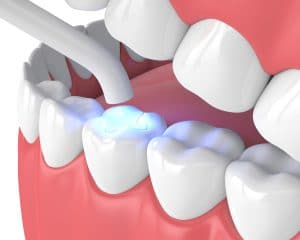

1. Consultation and Examination:

Cosmetic dental fillings, also known as tooth-colored or white fillings, are dental restorations used to repair teeth that have been affected by decay, cavities, or minor damage. Unlike traditional amalgam (silver) fillings, cosmetic fillings are made from tooth-colored materials, such as composite resin or porcelain, to match the natural color of your teeth. Here's an overview of cosmetic dental fillings:
1. Consultation and Examination:
Before the filling procedure, your dentist will conduct a thorough examination of your teeth, including visual inspection and sometimes X-rays, to assess the extent of the decay or damage.
They will discuss treatment options with you, including the use of cosmetic dental fillings, and address any questions or concerns you may have.
2. Tooth Preparation:
The affected tooth is prepared for the filling by removing the decayed or damaged portion. The dentist will numb the area with a local anesthetic to ensure your comfort during the procedure.
The tooth is carefully cleaned and prepared to create an ideal surface for bonding the filling material.
3. Filling Material Application:
Composite resin fillings: For small to medium-sized cavities, composite resin is commonly used. The tooth-colored composite material is applied in layers and shaped to match the natural contours of your tooth.
Porcelain fillings (inlays or onlays): In some cases, when a larger portion of the tooth is affected, porcelain fillings, also called inlays or onlays, may be recommended. These fillings are custom-made in a dental laboratory and then bonded to the tooth.
4. Bonding and Shaping:
After the filling material is applied, it is hardened and bonded to the tooth using a special curing light.
The dentist will then shape and contour the filling to ensure it fits comfortably with your bite and looks natural alongside your surrounding teeth.
5. Final Polishing:
Once the filling is shaped, it will be polished to smooth out any rough edges and give it a natural luster, blending seamlessly with your tooth.
Benefits of cosmetic dental fillings include:
1) Aesthetic appeal: Tooth-colored fillings closely match the natural color of your teeth, providing a more seamless and aesthetically pleasing result compared to amalgam fillings.
2) Conservative approach: Cosmetic fillings require less tooth preparation compared to amalgam fillings, as they bond directly to the tooth structure.
3) Versatility: Cosmetic fillings can be used to restore both front and back teeth, offering a versatile option for repairing decay or damage.
4) Bonding strength: Composite resin fillings chemically bond to the tooth structure, which can help provide added support and reinforcement to the tooth.
It's important to note that cosmetic dental fillings are best suited for smaller to moderate-sized cavities or minor tooth damage. In cases of extensive decay or severe damage, alternative treatments such as dental crowns may be recommended to restore the tooth's strength and functionality.
If you are considering cosmetic dental fillings, it's advisable to consult with a dentist who specializes in cosmetic dentistry. They will evaluate your oral health, discuss your aesthetic goals, and determine the most appropriate treatment option for your specific situation.